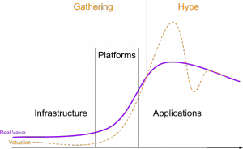

Note: This post was first published on the Pioneers Festival blog.
What do Richard Branson, Elon Musk, Larry Page, Eric Schmidt, Robert Bigelow, Ross Perot Jr, Paul Alan and Peter Thiel have in common? Well, first of course, they are billionaires. But secondly, they invest in space companies. When top billionaire entrepreneurs start to invest in something new, we may see the formation of a new trend. But why space, such a hard and long term endeavor, why not just simply betting on the next billion dollar app? It’s because of the question these people are asking: what are the biggest challenges humankind is facing? One of those challenges is increasing population vs. scarcity of resources.
When thinking about resources, most people have a very depressing view of the future. We are extracting everything that mother earth has to offer at exponential increasing speed. The 6 billion poor people want to live like the richest billion, and who could blame them for that desire? It just won’t be possible if we divide up all resources that are still available. And we haven’t even started talking about the permanent damage that is done to the ecosphere of our planet by extracting and processing those ever harder to obtain resources.
There are even otherwise smart people who belief life on earth will end in high entropy chaos and decay because we are converting all available high quality energy forms into lower forms to power our civilization on the difference. In this view, all we can do to prolong this process of decay and chaos is to reduce the human energy footprint to the lowest possible level.
Of course this is complete nonsense because earth will be bathing in 173 petawatts (that’s a number with 15 zeros) of fresh solar energy for the next 5 billion years or so. But it demonstrates the depressed mindset that a good part of humankind – faced with ever scarcer resources and dying nature – has adopted. Robert Zubrin, author and president of the Mars Society, describes in one of my favorite speeches the fundamental problem and threat to humanity of this of closed future mindset: it effectively means that in the ever fiercer competition for depleting resources every person becomes the enemy of every other person on the planet and every country the enemy of any other country.
So are we doomed? Well yes, if we see earth as the only resource in the universe. Of course that’s not the case, but isn’t it interesting how many people still can’t grasp the simple fact, that earth is not the center of the universe and that there is so indefinitely much more out there? Since the early days of humankind only few pioneers dared to dream what could be on the other side of a great mountain, vast desert or sea. But when those pioneers did the voyage to the other side, to the new land, usually great prosperity followed for those associated with them (note: Mars doesn’t have an indigenous population – space is just waiting for the gift of life).
After exploring and conquering all valuable land on earth, our solar system is the next logical step for human expansion and prosperity. But again, only few pioneers are seeing and believing the obvious. Maybe we all have been burned by the Apollo program; the biggest and boldest steps of humankind only to have it all shut down by Nixon when the political goal of beating the Russians was accomplished. No further human exploration of space, no Space Odyssey in 2001 and no Contact in 2010.
So this first wave of space exploration has gone by, only with the ISS to show for today, when we could have thousands of humans in space with 1980s technology if we just wanted it hard enough (for the same price: bank bailouts or the solar system, anybody?). But a new wave is gathering. This time it’s not governments but private entrepreneurs, and that’s the reason why it will work: there are no changing political agendas, just prosperity waiting for everyone who can think and act big enough. Maybe China’s ambitions will ignite a government space race again, but at the time that happens, private companies will be in the lead.
{kind=link}
Technology Waves:

Now where are we in this new wave? It may have started around the year 2000. A couple of smaller companies have come and gone with the winning of the Ansari X Price as the first real breakthrough (this is a great read about that first period). But we are still in the rather flat infrastructure phase. Maybe Planetary Resources will open up the next phase by providing a network of space gas stations, that will enable cheap commercial space exploration.
It won’t happen tomorrow, but I am certain that within our lifetime we will have affordable, private access to outer space. And then the second chapter of human history will begin.
Following is a list of so called NewSpace companies, the pioneers that are making it happen:
Planetary Resources
- http://www.planetaryresources.com/
- Founders: Peter Diamandis, Erik Anderson
- Investors: Larry Page, Eric Schmidt, Charles Simonyi, Ross Perot Jr., Ram Shriram
- Advisors: James Cameron, David Vaskevitch, John S. Lewis
- Spacecrafts:
SpaceX
- http://www.spacex.com/ (Wikipedia)
- Founder: Elon Musk
- Investments: $100M Elon Musk, $20M Founders Fund, $30M Draper Fisher Jurvetson + Founders Fund
- Development costs for Falcon 9 Rocket: $300 million
- Total development costs until 2011: $800 million
- 40 flights booked for a total of $3 billion in revenues
- Profitable since 2007
- Spacecrafts: Falcon 1 & 9 rockets, Dragon capsule
Space Exploration Technologies – short SpaceX – is building the Falcon series of rockets and the Dragon spacecraft and has been awarded a contract with NASA to supply the International Space Station.
The big vision behind the company is to make humankind a multi-planetary species. The Dragon capsule is already designed for a atmospheric re-entry from moon and mars return trajectories.
SpaceX has already accomplished something that previously only three nations had done before: launched and returned a spacecraft safely from orbit.
Stratolaunch Systems
- http://www.stratolaunch.com/
- Founder: Paul Allen
- Spacecraft: SpaceX rocket + Dragon capsule
- Cooperation with: Scaled Composites, SpaceX
Scaled Composites will construct the largest plane in the world to launch a SpaceX rocket and Dragon spacecraft from the stratosphere to low earth orbit.
Bigelow Aerospace
- http://www.bigelowaerospace.com/ (Wikipedia)
- Founder: Robert Bigelow
- Spacecraft: Genesis I+II (in orbit), BA 330 station
- Investment until 2010: $180 million
- Total investment until 2015: $500 million
Bigelow Aerospace is working on an inflatable space station technology taken over from NASA to build private space stations.
Virgin Galactic
- http://www.virgingalactic.com/ (Wikipedia)
- Founder: Richard Branson
- Spacecraft: SpaceShipTwo
- Air- & spacecraft developed by The Spaceship Company (TSC) – a joint venture between Scaled Composites and the Virgin Group
Blue Origin
- http://www.blueorigin.com/ (Wikipedia)
- Founder: Jeff Bezos
- Spacecraft: New Shepard (suborbital)
This very secretive company from Amazon founder Jeff Bezos is working on a suborbital vertical takeoff and landing spacecraft, the New Shepard, and a larger version to reach low earth orbit. SpaceX is working on a similar vertical landing technology for their orbital rockets.
Xcor Aerospace
- http://www.xcor.com/
- Founder: Jeff Greason
- Spacecraft: Lynx
Armadillo Aerospace
Founded by computer game programming legend and genius John Carmack, Armadillo has incrementally developed their rocket technology to a point where they now can aim for suborbital flights, eventually with paying space tourists.
Masten Space Systems
- http://masten-space.com/ (Wikipedia)
- Founder: David Masten
- Spacecraft: Reusable suborbital
Interorbital Systems Corporation (IOS)
- http://interorbital.com/ (Wikipedia)
- Founder: Roderick and Randa Milliron
- Spacecraft: Neptune series rockets
This small Californian rocket startup’s first orbital goal is to launch very small and cheap CubeSats and TubeSats to a 300km decaying orbit. First TubeSat kits including launch were available for only $8,125.

MoonEx – Moon Express Inc.
- http://moonexpress.com/ (Wikipedia)
- Founders: Naveen Jain, Barney Pell, Robert D. Richards
- Spacecraft: CSB Lander
Goals: winning the Google Lunar X Prize, and ultimately mining the Moon.
Space Energy
Developing space based solar power technologies.
Shackleton Energy Company (SEC)
- http://www.shackletonenergy.com/ (Wikipedia)
- Founder: Bill Stone
Developing fuel stations in space for cheaper exploration of space.
Copenhagen Suborbitals
- http://www.copenhagensuborbitals.com/ (Wikipedia)
- Founders: Kristian von Bengtson, Peter Madsen
Copenhagen Suborbityals is a non-profit suborbital space endeavor based entirely on sponsors, private donators and part time specialists.
Hermes – STAR Systems
- Spacecraft: Hermes (not to confuse with Hermes from the European Space Agency)
Sierra Nevada Corporation Space Systems
- http://www.sncspace.com/, http://www.sncorp.com/ (Wikipedia)
- Spacecraft: Dream Chaser
- People: Mark Sirangelo (Corporate Vice President of Space Systems)
Not a NewSpace startup, but their privately developed Star Chaser crew transportation spacecraft is really interesting for the private space scene.
Interview with Mark Sirangelo: Part 1, Part 2, Part 3, Part 4, Part 5
Skylon – Reaction Engines Ltd.
- http://www.reactionengines.co.uk/ (Wikipedia)
- Spacecraft: Skylon
REL is working on the holy grail of space launch technologies: “single stage to orbit”. That means that there are no stages that are dropped off and lost, the spaceplane takes off like a normal airplane flies into space and lands again like an airplane. This could dramatically reduce the cost of accessing space if the vehicle can operate like a normal airliner. Key to this capability is the engine technology that REL is working on. It’s an hybrid of a jet engine for atmospheric flight and a rocket engine for space.
Google Lunar X Prize
- http://www.googlelunarxprize.org/ (Wikipedia)
- Founder: Peter Diamandis
- Organized by: X Price Foundation
- Main sponsor: Google
- Prices: $30 million in total
The GLXP challenge calls for privately-funded spaceflight teams to compete in successfully launching, landing, and then traveling across the surface of the Moon with a robot, while also sending back to Earth specified images and other data.
Liftport Group
- http://liftport.com/ (Wikipedia)
- Kickstarter Project
- Lunar Space Elevator on Wikipedia
- Interview with Michael Laine, part 1
More NewSpace Information
Video Podcasts:
News:
Books: